Six screens,
one honest loop.
Upload what you've already written. Point it at the jobs you actually want. Get told the truth, then drill until it isn't true any more.
01 · Profile
Your evidence, reconciled
Upload résumés, project write-ups, performance reviews. Each document is parsed into structured facts — roles, skills, education, certifications — and every fact keeps the sentence it came from.
Facts are de-duplicated across documents: the same role described three ways becomes one entry, enriched by all three. You can also just type or dictate what you've done.
{kind=link}
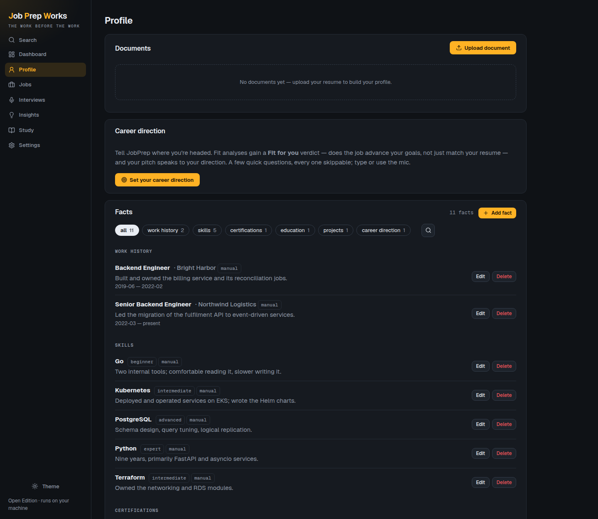
02 · Fit analysis
The number you didn't want
Your evidenced facts against the job's actual requirements. Strengths cite the evidence. Gaps say what's missing and what closing it would take.
It is not designed to make you feel good. If you're a 62% fit it says 62%, and it says why — including when the role runs against the career direction you told it you wanted.
{kind=link}
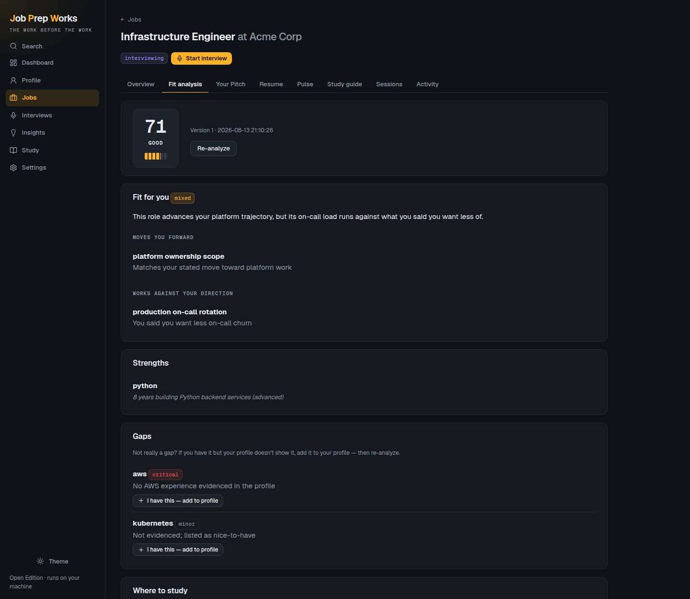
03 · Mock interviews
Graded, and it pushes back
Questions generated from that job's requirements — technical, behavioural, situational. Answer by typing or speaking.
Every answer is scored 1–5 against explicit criteria with specific feedback. A weak answer earns a follow-up that probes exactly the thing you skipped, the way a real interviewer would.
{kind=link}
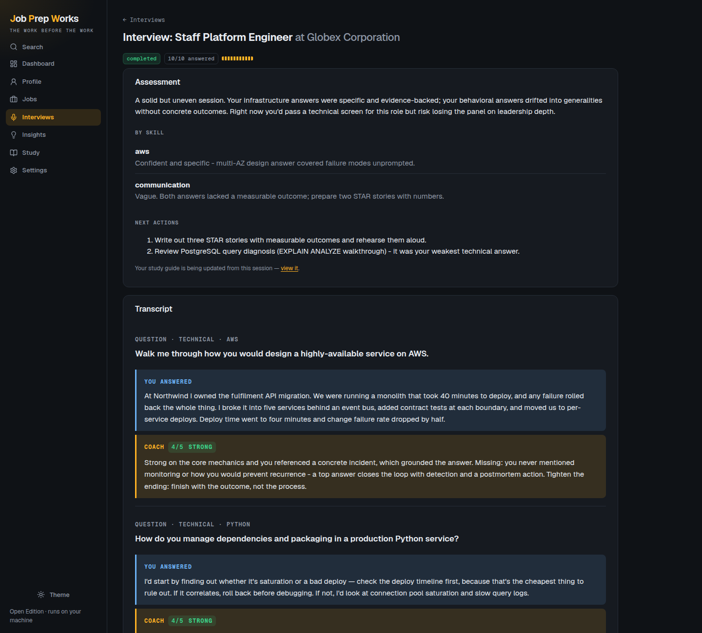
04 · Company Pulse
The employer, with receipts
Live web research on the company: ratings, the complaints that keep recurring, recent news — every claim linked to the source it came from. Where the evidence is thin, it says so instead of padding.
Works out of the box on Anthropic, OpenAI, and OpenRouter. On a local model the app runs the searches itself through Tavily, Brave, or your own SearXNG.
{kind=link}
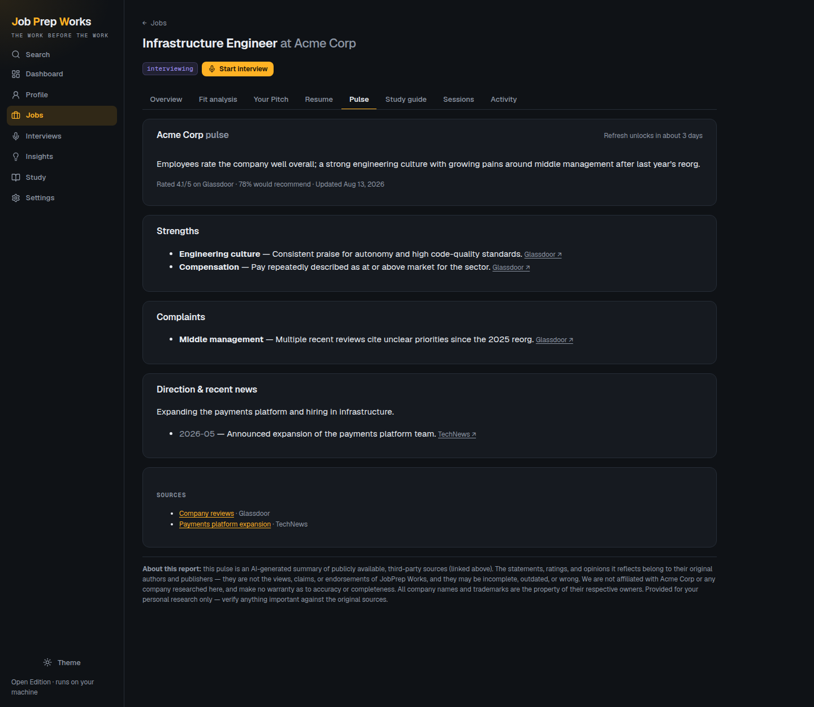
05 · Insights & study
The pattern across every job
Chasing several roles? It finds the one gap quietly costing you six applications, then builds a focus plan from the gaps that keep recurring.
Per-job study guides too, and any topic can be drilled on the spot with a single instantly-graded question.
{kind=link}
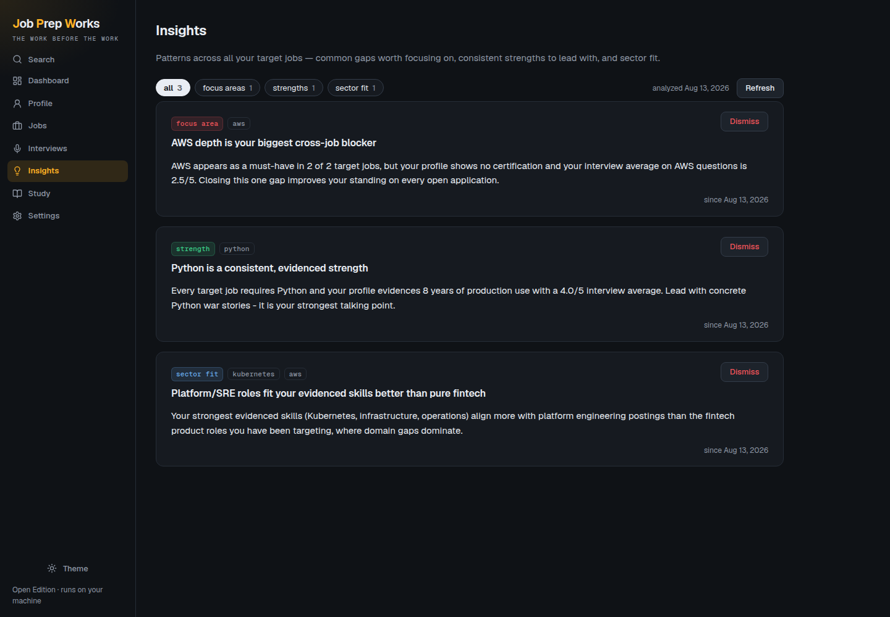
06 · Settings
No account to manage
Because there isn't one. Settings holds your résumé header, the theme, a live readout of which model you're actually running, and what today's work has cost you in calls.
It also prints exactly where your data sits on disk — because deleting those two paths is the reset, and that needs no button.
{kind=link}
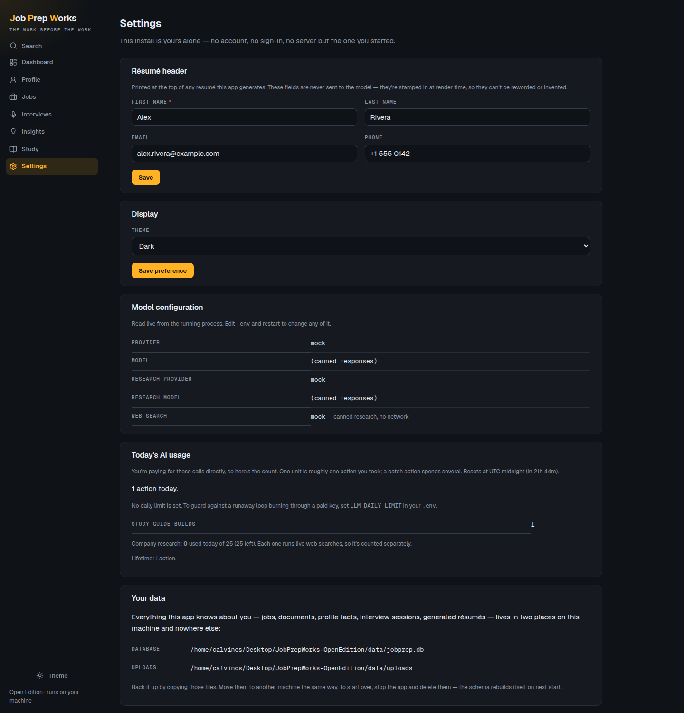
Every screen,
nothing staged.
Straight captures of the running app. Click any of them for the full-size image. Light and dark both ship — the app follows your system by default.
{kind=link}
{kind=link}
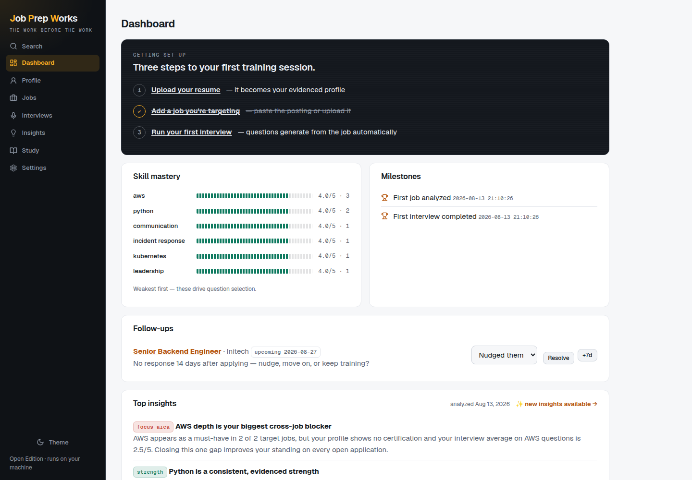
{kind=link}
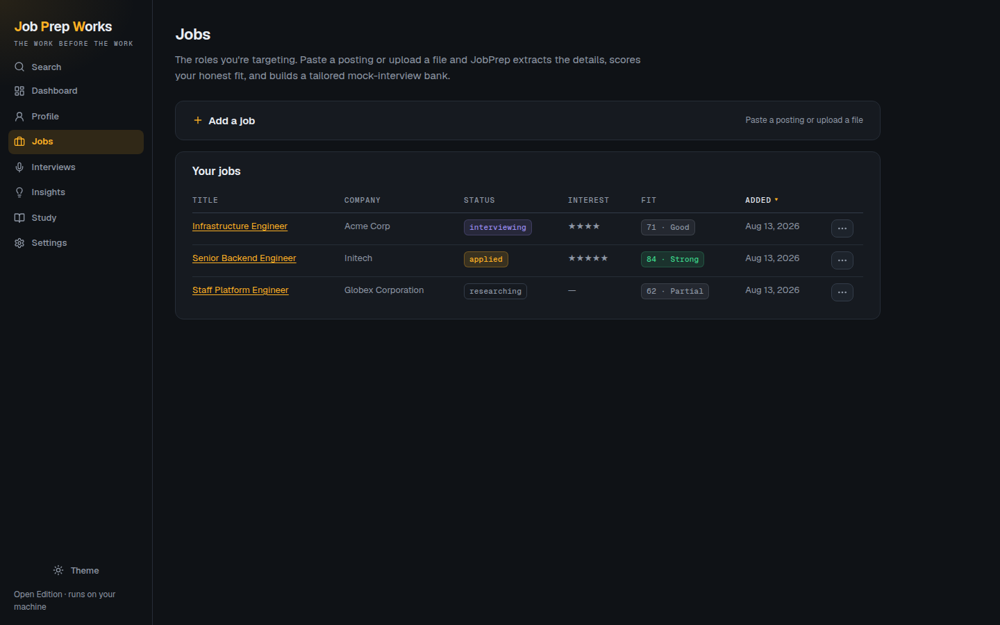
{kind=link}
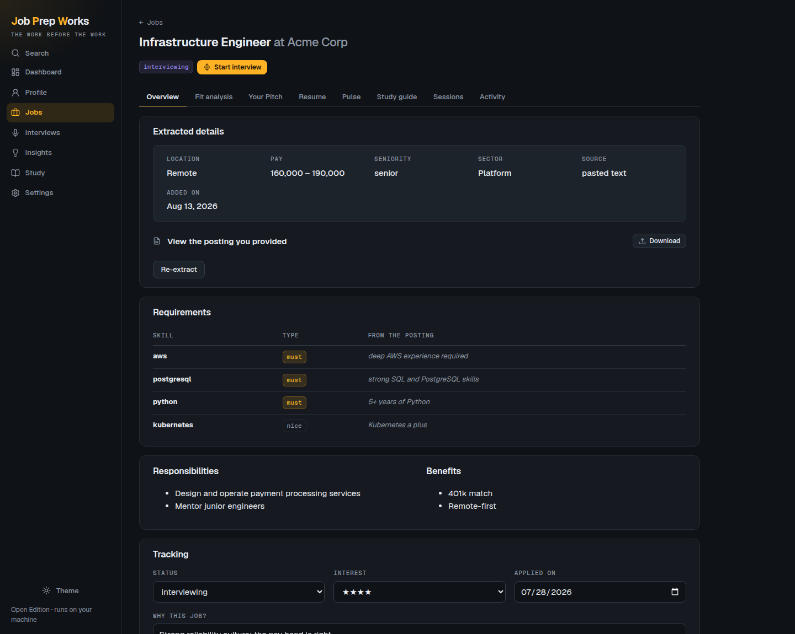
{kind=link}
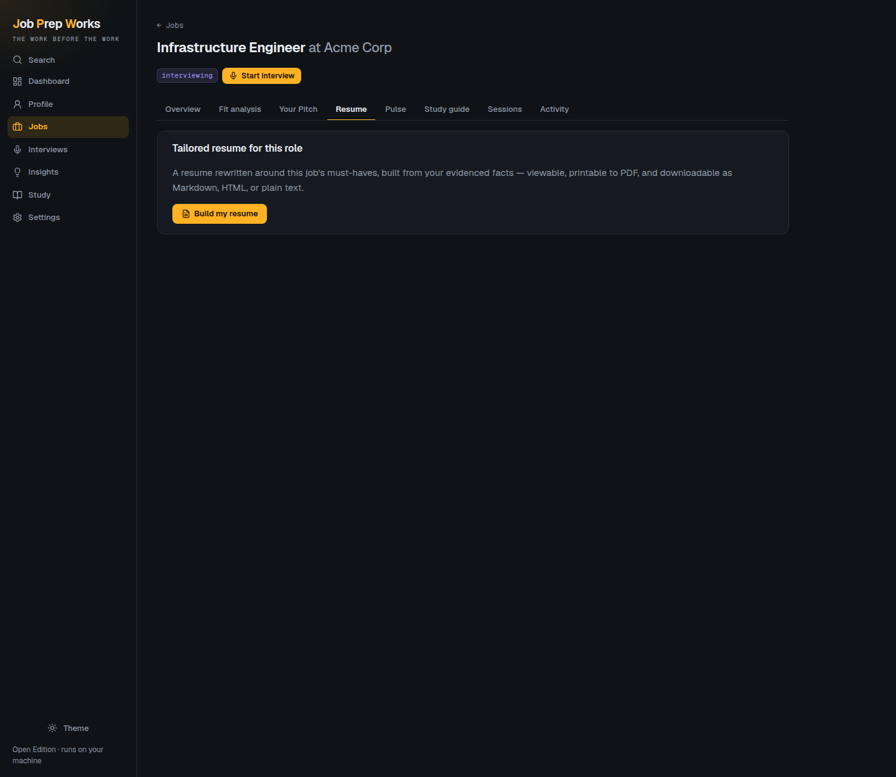
{kind=link}
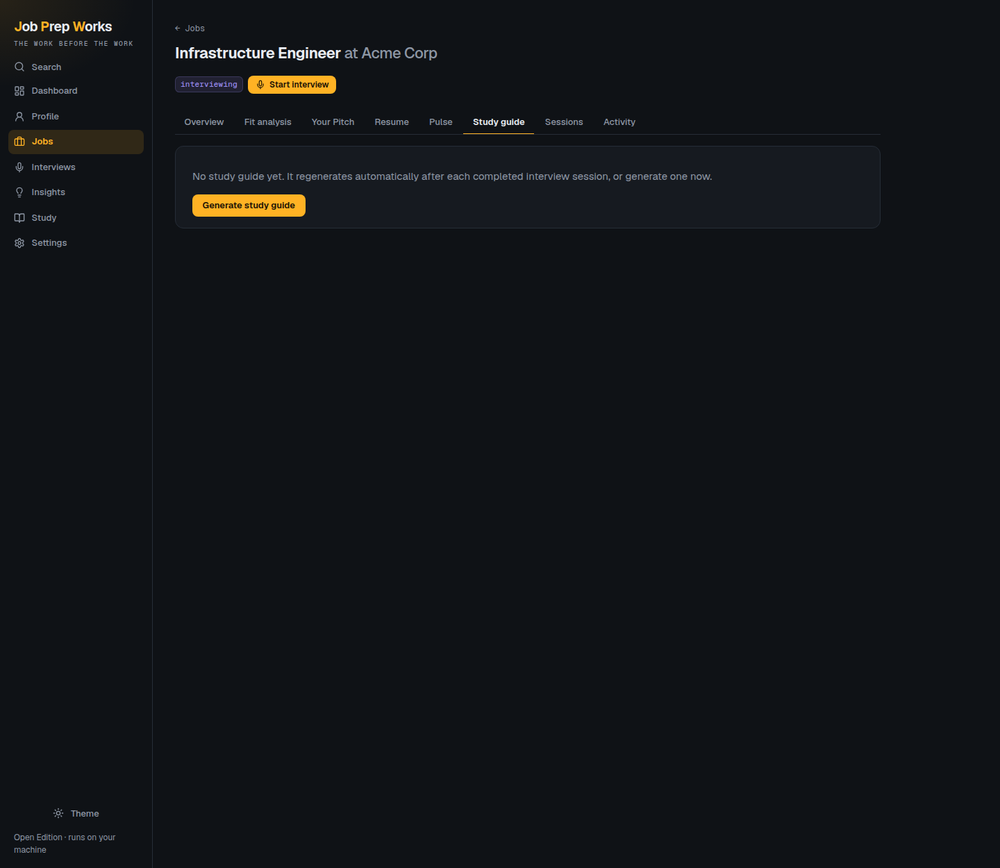
{kind=link}
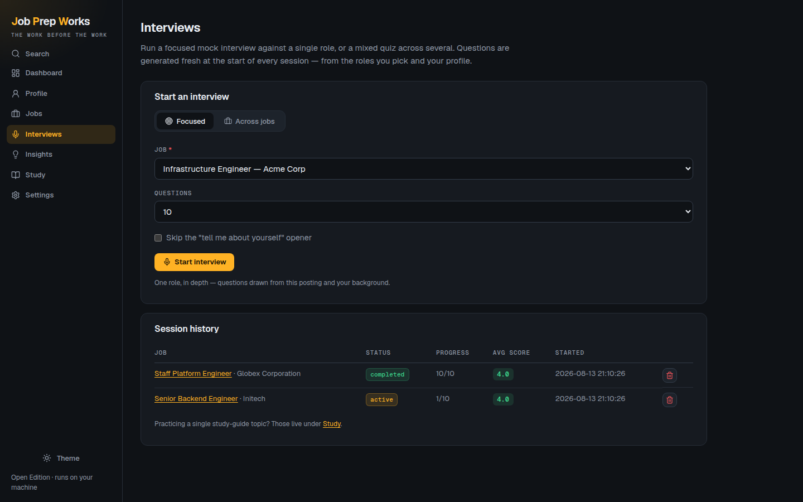
{kind=link}
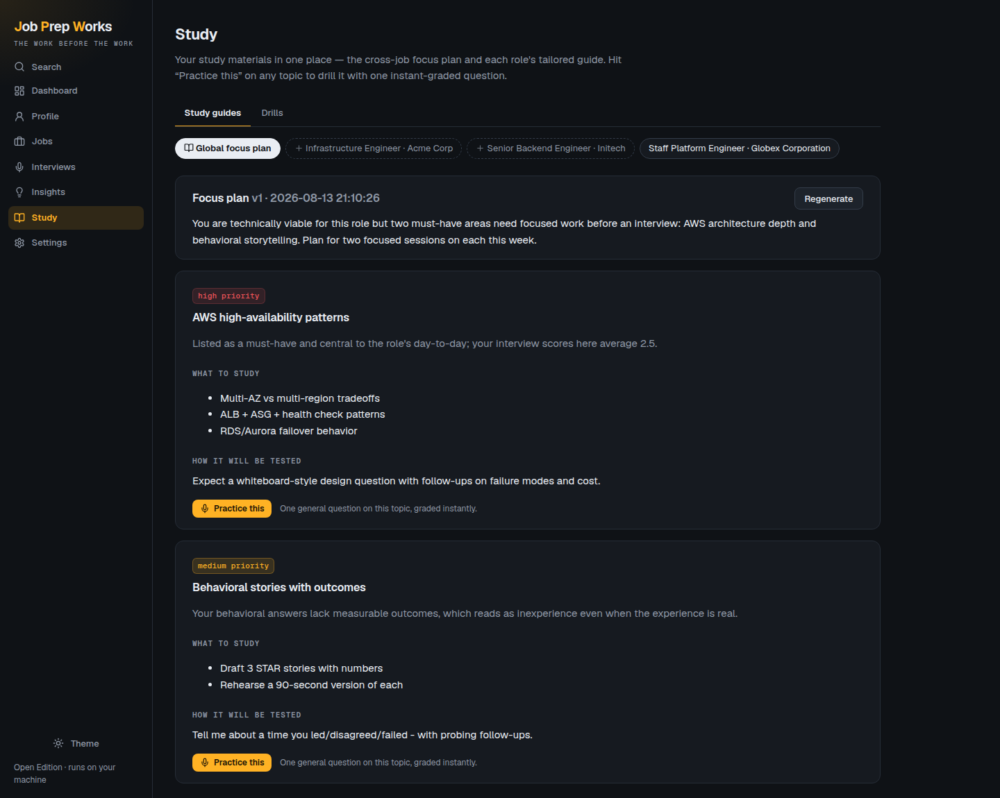
Bring your own.
Four providers, all first-class, chosen with one line in .env. You pay your provider directly at their rates — there is no middleman and nothing is gated.
| Provider | What you set | Notes |
|---|---|---|
| Anthropic | ANTHROPIC_API_KEY |
The only one with a model default — a key alone is enough. Web search built in. |
| OpenAI | OPENAI_API_KEY + LLM_MODEL |
Web search built in. |
| OpenRouter | OPENROUTER_API_KEY + LLM_MODEL |
Hundreds of models behind one key. Prompts routed only to hosts that don't retain them. |
| Ollama | LLM_MODEL + a running Ollama |
Fully local — your documents never leave the machine. Needs a search API for Company Pulse. |
| Anything OpenAI-compatible | LLM_BASE_URL + LLM_MODEL |
llama.cpp, vLLM, LM Studio, a proxy. |
| mock | nothing | Canned data, no network. For demos, UI work, and looking around before you commit a key. |
Every feature is always available. There is no plan, no tier, and no upsell — the only optional limit is a spend brake you set for yourself.
Four lines.
Requirements: Python 3.11 or newer. That's the whole list — SQLite ships with Python, and there's no Docker, no database server, no Node, and no build step.
# clone, set up, configure, run git clone https://github.com/calvincs/JobPrepWorks-OpenEdition.git cd JobPrepWorks-OpenEdition scripts/setup # venv + dependencies + .env $EDITOR .env # uncomment ONE provider block scripts/run # → http://127.0.0.1:8000
Want to look around first? Set LLM_PROVIDER=mock and every feature returns sample data instantly — no API key, no network.
- Your data stays putOne SQLite file and one uploads directory, both inside the project. Back it up by copying the folder; reset by deleting it.
- Nothing phones homeNo analytics, no crash reporting, no accounts. The only outbound calls are the model provider you chose and the searches Company Pulse makes when you ask it to.
- Safe on a browsing machineCross-site writes are refused, the CSP is strict, and model output is sanitised before anything renders as a link.
- Set up by an agentAn
llm.txtin the repo gives a coding agent the install, verification, and troubleshooting steps in its own terms.
What it isn't.
It never joins your interview, and it never invents your story. It drills answers and drafts your pitch and résumé from your real experience only — by the time you're in the room, you don't need it there.
- Single user, single machineNo sharing, no sync, no mobile app. There is no login, so don't expose the port.
- AI output is AI outputThe fit score and grades are a well-grounded second opinion, not a verdict. Pulse summarises third-party sources that may be outdated or wrong — the links are there so you can check.
- Small local models do worseThe extraction schemas and grading rubrics are demanding. If Ollama output looks thin, that's usually the model, not the app.
- Voice input needs a browser APIDictation uses your browser's speech recognition, so it needs one that has it.